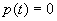

|
|
Dr. Layer
1.0 |
|||||||||||||||||||||||||||
| The
propagation of waves is an important phenomenon that affects a medium when
it is affected by a local excitation. The local excitation of a medium is
not instantaneously detected at positions that are at a distance from the
region of the excitation. It takes time for a disturbance to propagate from
its source to other positions. This phenomenon of propagation of disturbances
is well known from physical experience, and is usually referred as wave
propagation. For example, an earthquake or an underground nuclear explosion
is recorded in another continent well after it has occurred. These examples
illustrate mechanical wave motions or mechanical wave propagation.
In the following sections we will introduce basic concepts of wave propagation.
To simplify the analysis,this initial document will concentrate on one-dimensional
wave propagation and its possible extension to layered media.
Propagation of Mechanical Waves Mechanical waves originate in the forced motion of a portion of a deformable medium. As elements of the medium are deformed the disturbance, or wave, progresses through the medium. In this process the resistance offered to deformation by the consistency of the medium, as well as the resistance to motion offered by inertia, must be overcome. As the disturbance propagates through the medium it carries along amounts of energy in the forms of kinetic and potential energies. Energy can be transmitted over considerable distances by wave motions. The transmission of energy is effected because motion is passed on from one particle to the next and not by any sustained bulk motion of the entire medium. Mechanical waves are characterized by the transport of energy through motions of particles about an equilibrium position. Thus, bulk motions of a medium such as occur, for example, in turbulence in a fluid are not wave motions. Deformability and inertia are essential properties of a medium for the transmission of mechanical wave motions. If the medium were not deformable any part of the medium would immediately experience a disturbance in the form of an inertial force, or an acceleration, upon application of a localized excitation. Similarly, if a hypothetical medium were without inertia there would be no delay in the displacement of particles and the transmission of the disturbance from particle to particle would be effected instantaneously to the most distant particle. All real materials are, of course, deformable and possess mass and thus all real materials transmit mechanical waves. The inertia of the medium offers resistance to motion, but once the medium is in motion inertia in conjunction with resilience of the medium tends to sustain the motion. If, after a certain interval the externally applied excitation becomes stationary, the motion of the medium will eventually subside due to frictional losses and a state of static deformation will be reached. The importance of dynamic effects depends on the relative magnitudes of two characteristic times: the time characterizing the external application of the disturbance and the characteristic time of transmission of the disturbances across the body. One-Dimensional Wave Propagation Some of the characteristic features of wave motion in a continuum can be brought out by an analysis in a one-dimensional geometry. With one spatial variable the concepts and principles of continuum mechanics can be deployed without the encumbrance of geometrical complications to display the essential aspects of motion of a continuum and to derive the governing system of equations. One-dimensional linearized elastic theory is governed by a simple partial differential equation whose general solution can be determined by the use of elementary mathematics. Consider the free vibration of an infinitely long, linear elastic, constrained rod with cross-sectional area A, Young’s modulus E, Poisson’s ratio n, and density r, as shown in Figure 1. If the rod is constrained against radial straining, then particle displacements caused by a longitudinal wave must be parallel to the axis of the rod. Assume that cross-sectional planes will remain planar and that stresses will be distributed uniformly over each cross section. As a stress wave travels along the rod and passes through the small element shown in Figure 2, the axial stress at the left of the element (x=xo) is sxo;. At the right end (x=xo+dx), the axial stress is sxo + (d sx / dx) dx. Then the dynamic equilibrium of the element requires that
where u is the displacement in the x-direction. This simply states that the unbalanced external forces acting on the ends of the element (the left side of equation (1) must equal the inertial force induced by acceleration of the mass of the element (the right side). Simplifying yields the one-dimensional equation of motion:
In this form, the equation of motion is valid for any stress-strain behavior but cannot be solved directly because it mixes stresses (on the left side of equation 2) with displacements (on the right side). To simplify the equation of motion, the left side can be expressed in terms of displacements by using a linear elastic stress-strain relationship, sx = M ex, where the constrained Modulus M={(1-n)/[(1+n)(1-2n)]}E, and the strain-displacement relationship ex=du/dx are used. These substitutions allow the one-dimensional equation of motion to be written in the familiar form of the one dimensional wave equation for a constrained rod:
The one-dimensional wave equation can be written in the alternative form
where vM is the wave propagation velocity; for this case, the wave travels at . Note that the wave propagation velocity depends only on the properties of vM=sqrt(M/r) the rod material (its stiffness and density) and its independent of the amplitude of the stress wave. The wave propagation velocity increases with increasing stiffness and with decreasing density. A general solution to the linear wave equation can be obtained by introducing the substitutions:
whereby Equation (4) reduces to
Integrating, it follows that du/dx is a function of a only. Integrating again, we find that u(x,t) must be of the form
Any arbitrary form of the functions F( ), and G( ) employed in this equation will give a solution of the linear wave equation. If time t is increased by any value, say t, and simultaneously x is increased by vM Dt, the argument (t-x/vM) is clearly not altered. The term F(t-x/vM) thus represents a displacement disturbance propagating in the positive x-direction. Similarly, G(t+x/vM) represents a disturbance propagating in the negative x-direction. Since the shape of the propagating disturbances does not alter, the propagation is called distortionless and lossless. Half-Sapce Subjected to Uniform Surface Tractions The wave equation presented in the previous section is only valid for a constrained rod. Using these concepts we can now analyze the propagation of shear waves on a half-space subjected to uniform normal or tangential surface tractions. Suppose that the half-space is defined by z>=0 (see Figure 3). Denoting the normal stress in the z-direction by tz(z,t), we have at the boundary z=0 , where for the other stress components vanish identically at x=0. Any plane parallel to the z-axis is clearly a plane of symmetry. As a consequence, transverse displacements are not possible and the motion of the half-space is described by the displacements in the z-direction, denoted by u(z,t), which is a function of z and t only. The half-space is evidently in a state of one-dimensional deformation, and the equations defined in the previous section apply. Thus the deformation of the half-space is completely described by a single strain component of the form
we say that the half-plane is in a state of one-dimensional longitudinal strain. In the longitudinal direction in a half-space the stress and strain are related by
where E is Young’s modulus of elasticity. Then, the resulting displacement equation of motion (wave equation) is
where vL=sqrt(E/r) is the longitudinal wave velocity. It is important to note the similarity between the wave equation for the constrained rod and for longitudinal waves in a half space. Likewise, the propagation of shear wavs, is one-dimensional in nature and es in a half space subjected to uniform tangential surface tractions, t can be represented by a single equation. For this particular case, the half-space is completely described by the single shear strain component
where w is the horizontal deformation. We say then, that the half-plane is in a state of one-dimensional shear strain. In a one-dimensional shear strain state, the stress and strain are related by
where G is shear modulus of the material. Then, the resulting displacement equation of motion (wave equation) results in
where vS=sqrt(G/r) is the shear wave velocity of the half-space. It is important to note the similarity between Equations (10) and (13 ) and the equation of motion (wave equation) for a constrained rod, (Equation (4)). They all represent the same type of differential equation. The only difference is in the expression for the wave velocity. In the three cases the wave velocity is associated with the stiffness and the mass. The shear wave propagation velocity is the velocity at which a shear stress wave would travel along the rod. It is not the same as the particle velocity, which is the velocity at which a single point within the half-space would move as the shear wave passes though it. Moreover, the particle motion does not always coincide with the direction of the wave motion. In the case of longitudinal waves the particle motion direction coincides with the direction of the wave travel. However, in the case of shear waves, the particle motion is perpendicular to the direction of the wave travel. Knowing that dw=gzdz(from the strain-displacement relationship), gz=tz/G (from the stress-strain relationship), and dz=vSdt (from the definition of wave propagation velocity), the particle velocity dw/dt can be shown to be
Equation (14) shows that the particle velocity is proportional to the shear stress in the half-space. The coefficient of proportionality, rvS, is called the specific impedance of the material. The specific impedance is another important property that influences the behavior of waves at boundaries (lesson…). The propagation of waves in a half-space is actually more complex. Since the earth is three-dimensional and sources of seismic energy are three-dimensional, seismic waves must be described in terms of three-dimensional wave propagation. Derivations of three-dimensional equations of motion follow the same steps as those used for one-dimensional propagation; the equations of motion are formulated from equilibrium considerations, stress-strain relationships, and strain-displacement relationships. In the three-dimensional case, however, the various relationships are more complex and the derivations more cumbersome. In this introduction to wave propagation we will concentrate in the one-dimensional propagation of shear waves which is of great importance in civil engineering practice. A more complete analysis on the propagation of waves can be found elsewhere (Kramer, Achenbach). |
||||||||||||||||||||||||||||
|
Last
Updated: |
Contact us at: parduino@u.washington.edu
|